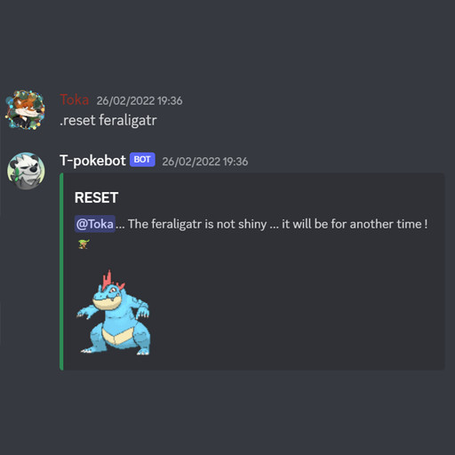

Durant le premier confinement, j'ai commencé à apprendre le python,
notamment en faisant des bots discord (un bot sur discord est une application qui permet d'automatiser
certaines taches, ou de réagir en fonction de commandes utilisées par l'utilisateur). Mon premier
bot était un bot de jeu, ce projet m'aura donc permis de me lancer dans le langage python, qui deviendra par
la suite un des langages que je maitrise le plus. L'objectif de mes 2 principaux bots (T-Pokebot et Tokabot)
étaient de fournir un systeme de jeu inspiré de la saga pokemon (t-pokebot) et le second de subvenir à
mes besoins, notamment pour de la modération ou du gain de temps pour diverses choses.

un exemple de commande avec le t-pokebot
Ce premier bot aura été réalisé pour un ami qui a eu l'idée du bot. Celui ci est basé sur le principe d'attraper un pokemon chromatique (plus rare) en exécutant des commandes limitée par un délais entre chaque utilisation. Le bot utilise l'heure unix pour détecter le délais entre 2 commandes et stocke toutes les données sur un cluser MongoDB, comme les données utilisateurs, les jeux en cours, etc..
Ce bot aura eu diverses utilités, il était le bot dans lequel je rajoutais des commandes quand j'en abvais besoin. Par exemple, une commande pour effacer le chat, un projet de Mastermind (projet pour la classe de NSI, utilisant mongodb aussi), un envoi de notification quand le prix d'une cryptomonnaie passe en dessous d'un certain seuil, calcul des frais de gas sur Ethereum (frais de transaction) en gwei (unité utilisée sur le réseau pour les frais) ainsi que la conversion en EUR ou en USD. Pour réalisé celà j'ai fait différents appels à différentes API et des calculs avant d'envoyer le résultat sur un salon précis.
Ces différents projets m'ont permis d'apprendre à automatiser un peu plus et à trouver des solutions à mes besoins. Pour moi python est un bon langage pour commencer à faire des bots discord. Ces projets ne sont plus hébergés, mais le code du t-pokebot est encore disponible sur mon github cependant ce code n'est pas très optimisé, étant donné que c'est mon premier gros projet, avant même de prendre la spécialité NSI.